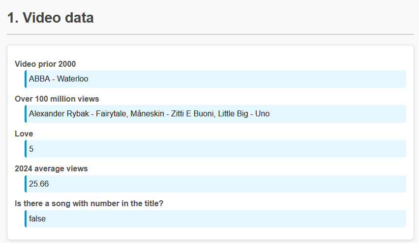
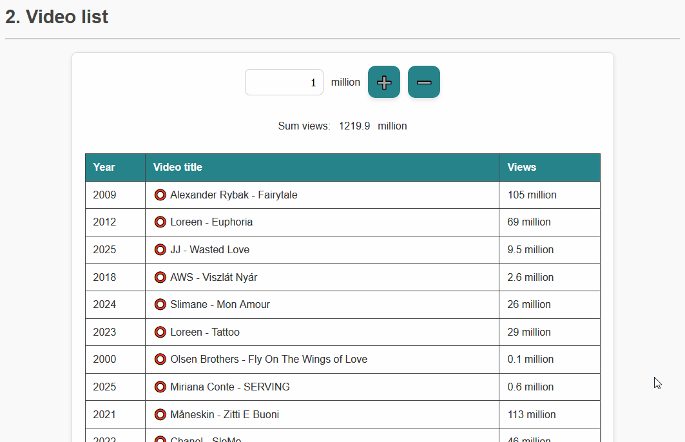

❗ Ebben a ZH-ban az összes feladat ugyanazokkal az adatokkal fog dolgozni, hogy ne kelljen újra és újra megérteni a különböző sémákat. Az adatokat számos formátumban megtalálod a data mappában. Bármelyiket használhatod bármely feladatnál, bátran másold bele a feladat mappájába a szimpatikus filet, vagy másold ki a tartalmát és illeszd be a kódodba egy az egyben. Az adatokhoz bármilyen segédattribútumot hozzáadhatsz, ha szükséges.
Az egyes elemek mind koncertvideók (élő fellépések felvételeinek) adatai:
id: Egyedi azonosító, ami csak angol kisbetűkből és számjegyekből áll.yt: YouTube azonosító, ami az élő fellépésre mutat. Tartalmazhat kis- és nagy angol betűket, számjegyeket, kötőjeleket, alulvonásokat (és bármelyikkel kezdődhet).title: A videó címe Előadó Neve - Zene Címe formátumban. Ez pontosan egy darab kötőjelet (-) tartalmaz, ami elválasztja az előadó nevét a zeneszám címétől.year: A felvétel éve (ebben az évben szerepelt a szám az Eurovízión).views: A videó nézettsége (millió) az Eurovízió YouTube csatornáján. Nem feltétlen egész szám.nation: Csak az utolsó PHP feladatban lesz releváns. Megadja, melyik ország színeiben lépett fel az előadó ezzel a dallal.Az Eurovíziós dalfesztiválok után a fellépések újranézhetőek online. Mivel nincs elég videó/zenemegosztó felület, mi is belevágunk, hogy készítsünk egyet.
Először is szeretnénk tudni pár információt a kedvenc Eurovíziós dalainkról. A feladatokat ne beégetve oldd meg, hanem programozottan, hiszen később lehet, hogy új dalok is megtetszenek!
taskA azonosítójú elembe írd ki egy 2000 előtti videó címét.taskB azonosítójú elembe sorold fel, hogy mely videók szereztek 100 milliónál több megtekintést!taskC azonosítójú elembe írd ki, hogy hány videó címében szerepel a Love szó!L, kis ove).taskD azonosítójú elembe írd ki, átlagosan hány megtekintése van a 2024-es videóknak! Az eredményt kerekítsd két tizedes pontosságra!taskE azonosítójú elembe írd ki, hogy van-e olyan zeneszám, aminek a címében szerepel számjegy.Igen / Nem, true / false, 0 / 1 vagy hasonló, logikus és beszédes eredmény.
Mivel még nem tudjuk, hogyan kell lekérdezni egy YouTube videó aktuális nézettségét, kézzel kell megejtenünk az adatok frissen tartását.
#video-table táblázatba listázd a videókat a mintának megfelelően (év, cím, nézettség millió)!tr) lehessen kijelölni.tr), alkalmazd rá a selected stílusosztályt!tr) kattintunk, vedd le róla a selected stílusosztályt!#sum elembe írd ki a videók össz nézettségét.#sum elemben csak a kijelölt videók össz nézettsége legyen (egyébként az összes videóé).#controls elemben lévő gombok működjenek értelemszerűen: a #btn-add megnyomására az összes kijelölt elemben növeld a nézettséget az #amount elem értékével; a #btn-sub pedig csökkentse őket, de az érték negatívra nem csökkenhet, helyette nullán marad.
JavaScripttel még nem ünnepeltük a karácsonyt, és ugyan vége a karácsonyi időszaknak, de egy kicsit emlékezzünk vissza arra, hogy ez az ünnep nem az esendő emberi szeretetről, hanem a hozzánk lehajló és minket felemelő, tökéletes isteni szeretetről szól. Díszítsük hát fel a Betlehem felett a fenyőfát fényekkel és kapcsoljuk be a fényjátékot!
bethlehem azonosítójú lista (ul), amelynek háttérképként van megadva a fenyőfa. Ide kattintva adjunk hozzá egy új listaelemet (li), beállítva a top és left tulajdonságát az egér pozíciójának megfelelően. Technikai segítség: használjuk az eseményobjektum offsetX és offsetY tulajdonságát a tartalmazó elemhez képesti pozíció lekérdezésére!color nevű rádiócsoport értékének megfelelően!color rádiócsoportban válasszuk ki a ciklikusan következő rádióelemet! Azaz ha piros volt, akkor a zöld legyen bejelölve, zöld után kék, kék után sárga, sárga után újra a piros, stb.change-colors azonosítójú gombra kattintva ciklikusan toljuk el a listaelemek háttérszínét. Például egy piros-kék-zöld izzósorból egy zöld-piros-kék lesz.change-colors azonosítójú gombra kattintva történjen a színváltás automatikusan másodpercenként. Használj időzítőt a megoldáshoz!